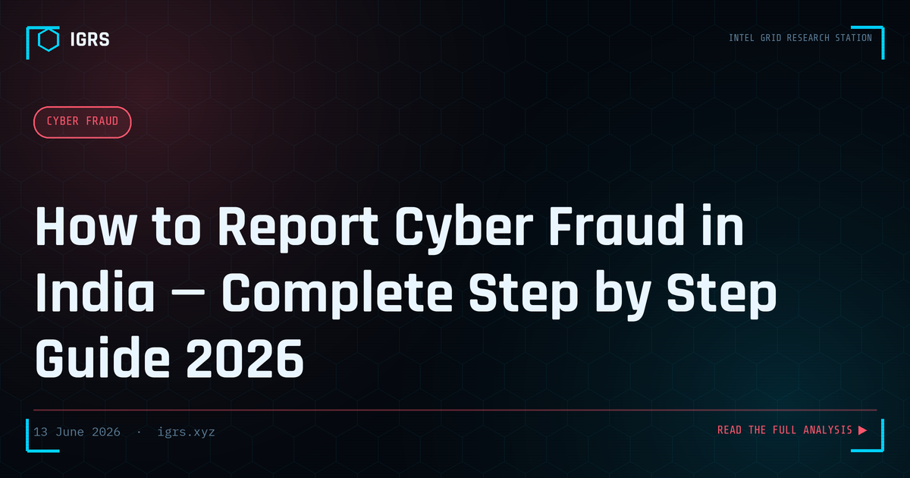

How to Report Cyber Fraud in India — Complete Step by Step Guide 2026
The First 30 Minutes Decide Everything
When cyber fraud strikes, the difference between recovering your money and losing it forever often comes down to the first thirty minutes. Most victims waste these critical minutes in panic and confusion. This step-by-step guide gives you the exact sequence of actions to take the moment you realise you have been defrauded — in the right order, with the right contacts — to maximise your chances of recovery.
Immediate Actions: The First 30 Minutes
The moment you realise fraud has occurred, execute these steps in order — sequence matters:
- Stop all further payments — disconnect from the fraudster immediately
- Screenshot everything — chats, emails, payment confirmations, the fraudster's profile
- Note every UTR/transaction ID — these are the forensic handles for tracing
- Call 1930 — the National Cyber Crime Helpline initiates a freeze
- Call your bank's fraud helpline — request an immediate transaction freeze
Step 1: Call 1930 — The National Cyber Crime Helpline
1930 operates 24x7 and connects directly to the banking system through the Citizen Financial Cyber Fraud Reporting and Management System. When you call, provide your name and location, all transaction details including UTR numbers and beneficiary information, and the amount lost. The operator immediately contacts the destination bank to flag and attempt to freeze the account. Note the complaint reference number you receive.
Step 2: File at cybercrime.gov.in
The online portal creates your formal written complaint:
- Visit cybercrime.gov.in and select "Report Cyber Crime"
- Choose "Report Financial Fraud" for monetary loss
- Register with your mobile number
- Complete the form: incident details, evidence upload, bank information
- Submit and save the acknowledgement number
This acknowledgement number is essential — your bank will need it to process freeze and recovery requests.
Step 3: Contact Your Bank
| Action | Detail |
|---|---|
| Call the fraud helpline | Provide the complaint number |
| Request lien marking | Hold on the fraudulent transaction |
| Escalate in writing | If the branch refuses, write to the manager |
| RBI Ombudsman | If the bank does not act, escalate to RBI |
Step 4: File an FIR
For larger amounts or where directed, file an FIR at your cyber cell or local police station. Carry printouts of all evidence, bank statements, and the complaint acknowledgement number. The applicable sections are S.318 BNS and S.66C/66D IT Act. If the police refuse, you can escalate to the Superintendent of Police or a Magistrate under the BNSS.
Step 5: Evidence to Preserve
Digital evidence is fragile and must be preserved immediately before it disappears:
- Export WhatsApp/Telegram chats with media and hash them
- Download bank statements as PDF with UTR numbers
- Save all URLs, domains, and social media profiles of the fraudster
- Preserve full email headers, not just the message body
- Record any call recordings or note caller details and timestamps
Recovery Expectations and Timelines
| Reporting Speed | Recovery Outlook |
|---|---|
| Within 1 hour | High (60-70%) — funds may be frozen in first layer |
| 1-6 hours | Moderate |
| 6-24 hours | Low — funds being layered out |
| After 24 hours | Very low — usually withdrawn |
The Indian Cyber Crime Coordination Centre (I4C) can flag accounts across banking networks, but only if you report promptly. Every minute of delay reduces the probability of intercepting funds.
Handling Non-Financial Cyber Fraud
Not all fraud is monetary. For sextortion, do not pay — report at cybercrime.gov.in, preserve communications, and block the perpetrator. For account takeover, attempt recovery immediately, enable MFA, and report to both the platform and cybercrime.gov.in. For identity theft, file with cybercrime.gov.in, alert affected banks and services, and consider locking your Aadhaar biometrics.
After Reporting: Following Up
Filing is not the end. Track your complaint status on cybercrime.gov.in using the acknowledgement number, coordinate between the cyber cell and your bank, and maintain copies of every complaint number, FIR, and communication. Many recoveries succeed because of persistent, documented follow-up rather than the initial report alone.
Prevention: Avoiding Victimhood
The strongest defence is never becoming a victim. Never share OTPs or UPI PINs, verify before clicking links, be sceptical of urgency and authority in unsolicited calls, never install remote-access apps at a caller's request, and remember that no legitimate official conducts arrests or demands payment over a call. Knowing exactly how to respond when fraud does occur — fast, in the right order — is the second line of defence that protects your money when prevention fails.